Ray Tracer
Features
- Ray creation
- Ray casting/intersection
- Ray-sphere intersection
- Ray-triangle intersection
- Ambient and emissive contributions
- Diffuse, specular, and shadow lighting
- Diffuse, specular, and shadow contributions
- Transformations
- Reflections
- Transparent surfaces
- Partial shadows
- Refractions
- Ray-box intersection
- Soft Shadows
- Jittered supersampling
Results
- Rendering test.ray with supersampling (n=3) and soft shadows (s=3)
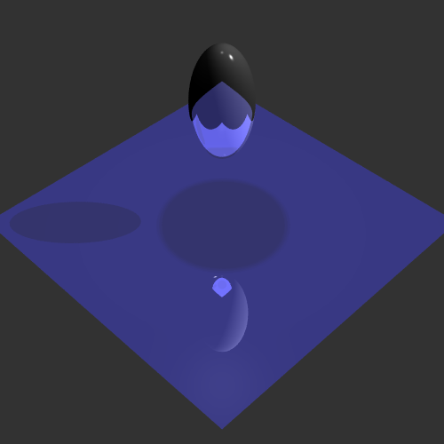
--rLimit 5 --cLimit 0.0001
- Rendering test.ray with small supersampling (n=1) and small soft shadows (s=1). Note the banding from casting few shadow rays for soft shadows.
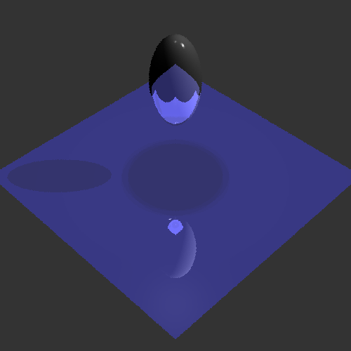
--rLimit 5 --cLimit 0.0001
-
RayBox intersection with n=5 supersampling and high index of refraction
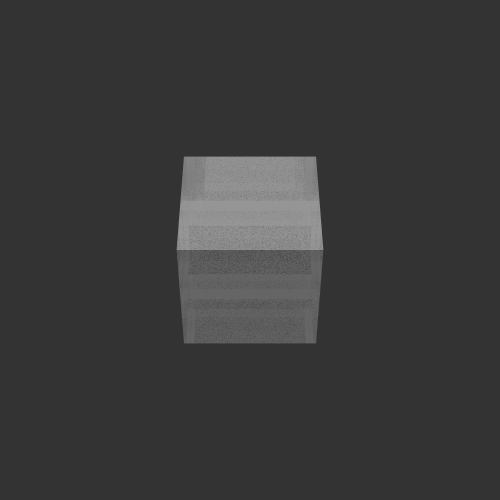
--rLimit 5 --cLimit 0.0001
-
Soft shadows, before and after implementing with a spot light. Also with a point light. Note the properties of the sphere are square were different than test.ray.
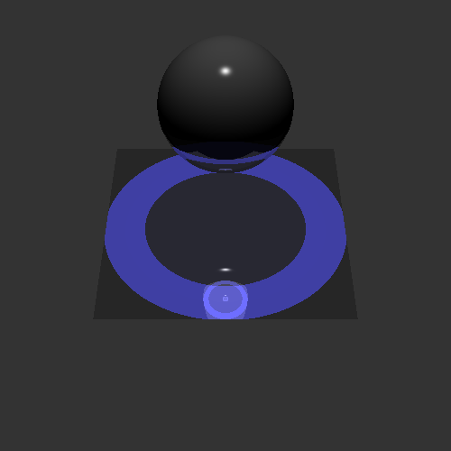

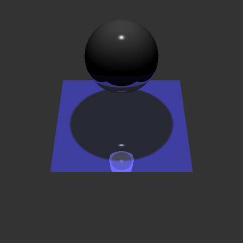
--rLimit 5 --cLimit 0.0001
-
Bounding volume hierarchy results with supersampling n=1 and soft shadows s=1 (bvh is partially implemented, resulting in artifacts as seen below)

--rLimit 5 --cLimit 0.0001
-
Art Submission: 3 transparent spheres, 2 triangles (4 squares). Super sampling n = 3, soft shadows s = 3, rendering time = too long
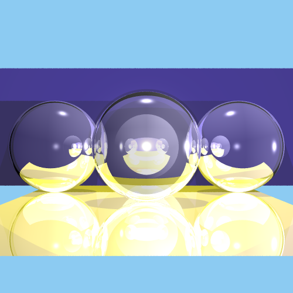
--rLimit 3 --cLimit 0.0001
| 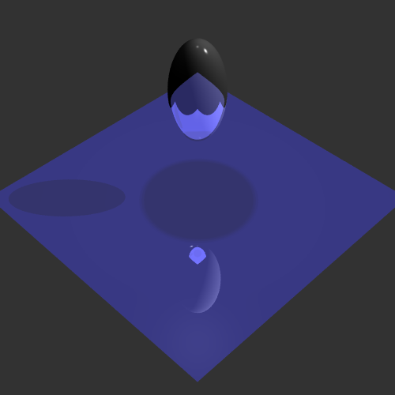 |
--rLimit 5 --cLimit 0.0001 |
| 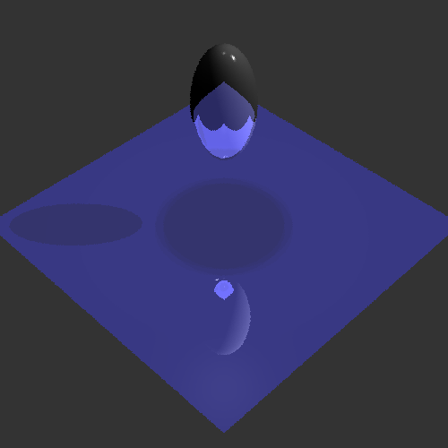 |
--rLimit 5 --cLimit 0.0001 |
RayBox intersection with n=5 supersampling and high index of refraction
| 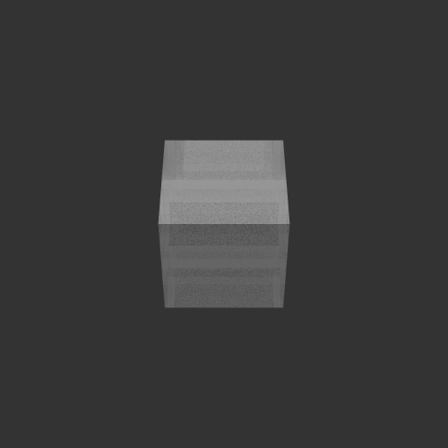 |
--rLimit 5 --cLimit 0.0001 |
Soft shadows, before and after implementing with a spot light. Also with a point light. Note the properties of the sphere are square were different than test.ray.
| 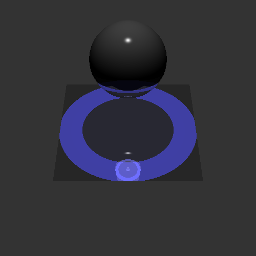 | |
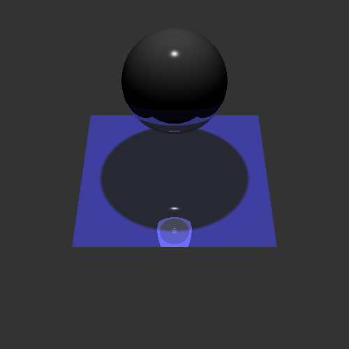 |
--rLimit 5 --cLimit 0.0001 |
Bounding volume hierarchy results with supersampling n=1 and soft shadows s=1 (bvh is partially implemented, resulting in artifacts as seen below)
|
--rLimit 5 --cLimit 0.0001 |
Art Submission: 3 transparent spheres, 2 triangles (4 squares). Super sampling n = 3, soft shadows s = 3, rendering time = too long
| 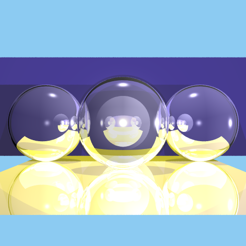 |
--rLimit 3 --cLimit 0.0001 |